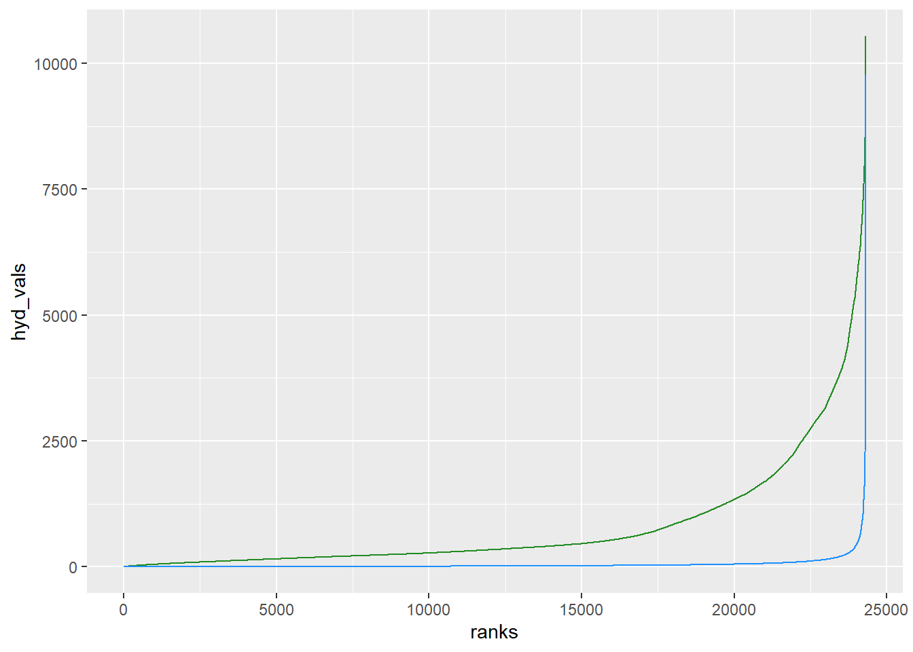
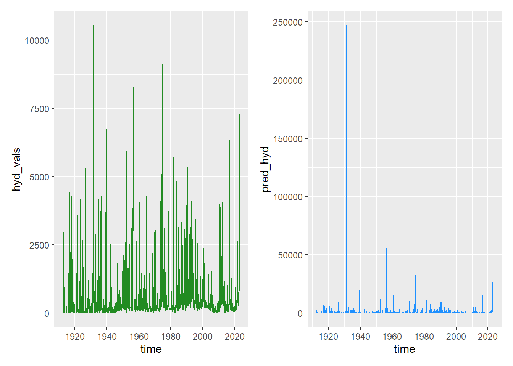

We are working on flow scaling to capture the changes in David’s flow scenarios. I’ve gone through 3 (and a half) methods so far, and each has issues. I’ll go through that here and then we can discuss a way forward. The key thing we’re trying to do is shift historical hydrographs according to modelled runoff simulation scenarios. There are fundamentally two characteristics we need to target-
The sequence of flows should match the historical hydrograph, though their values may change
The distribution of flow values should have the same shape as the hydrograph, but shift to reflect changes in the runoff scenarios
In each case, where appropriate, I’ve looked at how the transform affects the baseline data, as that is the best check of how the transforms themselves are working, and how they alter the properties of the sequence and distributions. And then I look at the differences among shifted hydrographs according to scenarios, to capture how the scenario shifts alter the distributions.
The main issues that arise are that the zeros (cease to flow) don’t change properly, and that two of the approaches (regression and parametric fits) yield distributions that look much different than the hydrograph distribution. The regression and parametric fits can change zeros, but this works better increasing zeros (decreasing runoff) than decreasing them- when runoff increases, everything that was zero becomes the same number.
I think the best approach will be a combination- see the end section Q-Q and regression, using q-q scaling for most of the hydrograph to get the distribution right, and a regression on the bottom 5% to change the zeros. And likely we should only look at the scenarios with reduced runoff to avoid the issue of making all zeros some positive number. The other solution there would be getting into the weeds with autoregressive sequences.
I’ve chosen a gauge with a reasonably long record (410016) in SS20, and saved its hydrograph and the SS20 scenarios into an Rdata file to avoid read-in and selection issues in this notebook. This notebook should run, though not if you don’t have the werptoolkitr package installed (depends on a single function).
The first option is q-q scaling, which was the original plan.
The issue with it is that the zeros never change- 0s in the hydrographs will remain 0, so we can never increase flow from 0, and the model never has zeros, so we can never increase the number of zeros.
Do the scaling
This was set up to purrr::map over all the sdl units and gauges, so has some functions that we can just bring over here, but are overkill for single gauge and sdl unit.
First, some quantile-finding functions
# identify quantilesget_q <-function(vals, q_perc) { qs <-quantile(vals, probs =seq(0,1, q_perc), type =5, na.rm =TRUE) binvec <-findInterval(vals, qs, rightmost.closed =TRUE)return(binvec)}# get the mean of a quantileget_qmean <-function(vals, q_perc =0.02) { binvec <-get_q(vals, q_perc) qmean <-aggregate(x = vals, by =list(binvec), FUN = mean) %>%setNames(c('quantile', 'mean'))}
Then a set of functions to scale the models. This groups by month, though that could be changed.
# get the scalings from a dataframe of scenariosget_scalings <-function(unitdf) {# Stack stackdf <- unitdf %>%mutate(sdl = stringr::str_extract(path, "SS[0-9]+")) %>%select(sdl, Year, Month, Day, starts_with('Sim')) %>%pivot_longer(cols =starts_with('Sim'), names_to ='scenario', values_to ='runoff')# Quantile means q_s <- stackdf %>%group_by(scenario, Month) %>%summarize(qmean =get_qmean(runoff)) %>%# reframe is the new way, but needs dplyr 1.1 which breaks lots of the functions# reframe(qmean = get_qmean(runoff)) %>% tidyr::unnest(cols = qmean)# Get the relative change q_s <- q_s %>%group_by(scenario, Month) %>% werptoolkitr::baseline_compare(compare_col ='scenario', base_lev ='SimR0', values_col ='mean', comp_fun =`/`) %>%ungroup() %>%select(scenario = scenario.x, everything(), relative_change =`/_mean`, -scenario.y)}
And we scale the scenarios
qq_model <-get_scalings(test_model)
`summarise()` has grouped output by 'scenario', 'Month'. You can override using
the `.groups` argument.
Adding missing grouping variables: `scenario`
Now we write a function to scale the gauge- this finds quantiles and applies the scalings from qq_model. This was again designed to map over all gauges in all sdl units, so is overkill here. I’ve cleaned out some of that, but didn’t want to spend too much time cleaning up the simple case.
scale_gauges <-function(gaugedata, scaled_model, qc_limit =150) {# Set bad data to NA gaugedata[gaugedata$quality_codes_id > qc_limit, 'value'] <-NA# make an NA quantile for each scenario so the join works properlyif (any(is.na(gaugedata$value))) { nafill <- scaled_model %>%distinct(scenario, Month) %>%mutate(quantile =NA, mean =NA, ref_mean =NA, relative_change =NA) scaled_model <-bind_rows(scaled_model, nafill) }# do the transforms gaugedata <- gaugedata %>%# get the time units rightmutate(Month = lubridate::month(time)) %>%rename(Date = time) %>%# To match other inputsgroup_by(Month) %>%# get quantiles- make a dummy so NA quantiles exist and get join-crossed with scenariosmutate(quantile =get_q(value, q_perc =0.02)) %>%ungroup() %>%# join to scalingsleft_join(scaled_model,by =c('Month', 'quantile'),multiple ='all') %>%# Says it's OK to duplicate rows x scenarios# get the adjusted levelsmutate(adj_val = value*relative_change) %>%# Just the needed cols dplyr::select(scenario, site, Date, adj_val) %>%# pivot so the gauge name is col name tidyr::pivot_wider(names_from = site, values_from = adj_val) %>%# collapse to a list-tibble with one row per scenario tidyr::nest(sc = scenario) %>% tidyr::unnest(cols = sc)return(gaugedata)}
CDFs- comparing to the model data, not the qq-scaled model, which is just used to transform. Top is on the raw scale, bottom is logged. This will be more relevant later, but it sets the stage of how the baseline distributions work.
If we used a higher threshold (I’d be surprised if 0.001 is a real measurement). A bit of shifting happening here. Still pretty low proportionally, but at least we would get a bit of variation.
The qq scaling does a good job creating distributions that look like hydrograph distributions, complete with funny lumps. And their shape does change, but in a similar way to the shapes of the modelled runoff distributions.
The catch is that the number of zeros is constant, and so any cease to flow conditions cannot change.
Ranked regression
This was David’s email- we replace the sequence of hydrographs with their same-ranked model values, and then translate back to hydrographs with a hydro ~ model regression.
The issue here is that the model and hydrograph distributions are nowhere near linearly related on the linear or log scale, and so the resulting hydrograph distribution is squashed compared to a real one.
It does change the zeros. But it doesn’t know which zeros to change, so it changes all of them- e.g. We end up with a big probability mass at whatever number the zeros all change to, and may lose all zeros. This will remain an issue even if we fix the horrible fits.
Do the scaling
We want to rank-match, but the data is different size and there are duplicate values. So to deal with that, I wrote a slightly different quantile function that divides the unique values into quantiles instead of all values, generating ranks, and then assigns all values to the appropriate rank to handle duplicated values. And to deal with the different-sized data, we calculate the number of quantiles from the length of the shortest dataset (hydrograph or model), so the ranks may not be exactly one value per rank.
Now, get the ranks. We use the function above, and for duplicated values within a rank for the model, we return the median, which is what we will use to replace the hydrograph. There are different numbers of unique values in the different scenarios, so use the minimum. We could do this separately for all the scenarios, but it becomes horrible to track the various ranks.
# Get the number of 'ranks' (bins) as the shortest set of valuesuniquemodel <- test_model %>%pivot_longer(cols =starts_with('Sim')) %>%group_by(name) %>%summarise(nunique =n_distinct(value))fewest <-min(length(unique(test_hydro$hyd_vals)),min(uniquemodel$nunique))# Rank the hydrographtest_hydro <- test_hydro %>%mutate(ranks =get_q_unique(hyd_vals, 1/fewest))model_rankvals <- test_model %>%pivot_longer(cols =starts_with('Sim'), names_to ='scenario') %>%group_by(scenario) %>%mutate(ranks =get_q_unique(value, 1/fewest)) %>%group_by(scenario, ranks) %>%summarise(mod_vals =median(value))
`summarise()` has grouped output by 'scenario'. You can override using the
`.groups` argument.
# replace (really, add another column)rank_hydro <-left_join(test_hydro, model_rankvals, by ='ranks')
Brief diagnostics of the hydro-model replacement
The values of the ranks follow quite clearly different distributions, even when rescaled.
rank_hydro %>%filter(scenario =='SimR0') %>%ggplot(aes(x = ranks)) +geom_line(aes(y = hyd_vals), color ='forestgreen') +geom_line(aes(y = mod_vals*500), color ='dodgerblue')

That relationship is clearly nonlinear on both the linear and log-log scales. I’ve thrown the linear fit on here, but it’s clearly a bit silly.
In theory, we’d have to decide now where to put the zero point, since pred_hyd here will get very small but never zero, since it’s predicted on the log scale. An obvious choice would be anything below the minumum in the original data min(rank_hydro_shift$hyd_vals[rank_hydro_shift$hyd_vals > 0], na.rm = TRUE). That number is 0.001, though that seems to be an artifact of something, and 1 is probably reasonable. But the predictions never get close- the minimum predicted value is
min(rank_hydro_shift$pred_hyd, na.rm =TRUE)
[1] 22.34629
which is unsurprising, from looking at those linear fits above. But it means we never predict zeros.
Outcome distributions
Compare baselines
We’ve compared the hydrograph to the baseline model data above, but here I want to look at hydrograph data to generated ‘hydrograph data’ out of the transform with SimR0.
Timeseries. The massive overestimates are really blowing things up here.
orig_time <- rank_hydro_shift %>% dplyr::filter(scenario =='SimR0') %>%ggplot(aes(x = time, y = hyd_vals)) +geom_line(color ='forestgreen') pred_time <- rank_hydro_shift %>% dplyr::filter(scenario =='SimR0') %>%ggplot(aes(x = time, y = pred_hyd)) +geom_line(color ='dodgerblue') orig_time + pred_time

CDFs of the original data to the regression-predicted. Top is on the raw scale, bottom is logged.
Note the big probability mass at the bottom- this is because all the zeros have the same rank, and so get the same predicted value. This will occur no matter what- even if we find a better regression. This mass is not htere in the data because the zeros are just dropped. If we had data + 0.01, it’d show up.
These contain the same lines as above, but I think it’s valuable to isolate the baseline transform before looking at the scenario shifts. These are the distributions of the ‘hydrographs’ that reflect the scenarios. I’ve included an x-limited panel on the linear scale since the values reach such absurd levels.
PDFs. Again, added an x-limited version to see what’s happening low. It’s clear the linear fits are causing major issues at both the bottom and the top of the distribution.
The number of zeros is essentially arbitrary though, dependent on the zero point and the regression. So, for example if we make the zero point 25, the number changes.
The problem is that it’s never continuous- all the zeros always get the same value, that value just changes.
So, we can add zeros if we use scenarios where the new_zero_val here is below the one for SimR0, but it doesn’t make sense to add water to those where it’s higher. That is only two scenarios though, so maybe that’s the way to go.
If we fit lognormal distributions to both sets of data, we can then shift the hydrograph lognormal in the same way as the changes in the runoff scenarios, and then map the hydrograph values to their distributional values to regenerate hydrographs.
This works, sort of, but it has a similar issue to the regression with the zeros all becoming the same number because they all get the new distribution at that point. It will create more zeros, though.
The fits are also pretty terrible- the hydrograph is just not normal on the log scale. They’re better than the linear version, but we still have the zero-shiftup issue.
I’ve done this with lognormal distributions directly. I could have logged the data and then used normals, which would yield some small changes on the margins around truncating distributions rather than optimising a shift. That might be better, but I’m leaving it until we can talk about a way forward- it still wouldn’t fix the issue with raising zeros up or the data being quite clearly not lognormal.
Do the scaling
We fit a lognormal, but also shift the data off zero by some optimum amount. This is equivalent to saying there’s some unknown part of the distribution that extends below 0- we just have to shift up to allow the lognormal to fit it. We could do something similar by pre-logging the data and fitting a truncated normal.
In testing, I developed some functions that do this optimisation and fit the lognormals. This is ugly because it returns a dataframe instead of easy-to-use parameters, but I’m not going to bother changing it now. Easy enough to later if we go this way. The dataframe is handy to keep track of the shifts.
fitshift <-function(cleandata, shift_up) {# Handle the zero shift case- we just use the next value upif (shift_up ==0) {rightlim <-min(cleandata[cleandata>0]) } else { rightlim <- shift_up} inshift <- cleandata + shift_up upcens <-tibble(left =ifelse(inshift <= shift_up, NA, inshift),right =ifelse(inshift <= shift_up, rightlim, inshift))suppressWarnings(fit_up <- fitdistrplus::fitdistcens(censdata =data.frame(upcens),distr ='lnorm'))return(fit_up)}opt_up <-function(shift_up, cleandata) { fit_up <-fitshift(cleandata, shift_up)return(-fit_up$loglik)}optshift <-function(rawdata) {# This is about distributions, NOT data order, so get rid of NAs rawna <-na.omit(rawdata$hyd_vals)# get the optimal shift shift <-optimize(opt_up, interval =c(0, 1000), cleandata = rawna)# Get the fit at that shift (would be nice to kick this out of opt_up somehow) fit_up <-fitshift(rawna, shift$minimum)# Create a df for output# The shifted data shiftdf <-tibble(time = rawdata$time,orig_data = rawdata$hyd_vals, shift_data = rawdata$hyd_vals + shift$minimum, optimum_shift = shift$minimum)# This isn't ideal, but we can shove the cdf on here too, it just has rows that don't mean the same thing. prevents us saving a list though. shiftdf <- shiftdf |>mutate(x =row_number()/10,meanlog = fit_up$estimate['meanlog'],sdlog = fit_up$estimate['sdlog'],cdf_up =plnorm(x, fit_up$estimate['meanlog'], fit_up$estimate['sdlog']),pdf_up =dlnorm(x, fit_up$estimate['meanlog'], fit_up$estimate['sdlog']),# Some diagnosticsfitloglik = fit_up$loglik)# and a shifted-back version of the cdf/pdf just needs a shifted x. The# backshift of the data is just the original `rawdata`. shiftdf <- shiftdf |>mutate(x_back = x-shift$minimum)}
Now we use that to fit the data. This gives us the best lognormal fit for the input hydrograph.
We also need the best lognormal fit for the model runoff for all scenarios
# make a df from the fit so we can return itfittabler <-function(x) {# uncensored, but use fitdistrplus function instead of MASS for consistency fitout <- fitdistrplus::fitdist(x, distr ='lnorm') fittable <-tibble(meanlog = fitout$estimate['meanlog'],sdlog = fitout$estimate['sdlog'],loglik = fitout$loglik)return(fittable)}scene_fits <- test_model %>%pivot_longer(starts_with('Sim'), names_to ='scenario') %>%group_by(scenario) %>%summarize(fit_sims =fittabler(value)) %>%ungroup() %>%unnest(fit_sims)
Brief diagnostics- how are the fits?
The hydrograph- the red line is the best fit curve, shifted back, so we can see what it would do below 0.
ggplot(optimal_fit) +# ecdf of the hydrograph datastat_ecdf(mapping =aes(x = orig_data), color ='forestgreen') +# lognormal cdfgeom_line(aes(x = x_back, y = cdf_up), color ='firebrick', linetype =2) +coord_cartesian(xlim =c(-10, 1000))
The means and sds here are on the log scale, and so can be treated like normal parameters. AND, because they’re on the log scale, arithmetic changes in mean yield multiplicative changes in the data.
So, to shift NORMAL distributions, we just add means and so we need the difference from each scenario mean to the SimR0. And to shift the sds, we use a multiplicative shift.
Basically, the mean shift needs to be calculated as the mean_new - mean_reference and the sd shift needs to be sd_new/sd_reference, where *new are the SimR1...7, and *reference are the SimR0. And then to apply them to the hydrograph distribution, the new sd is old_sd*sd_shift and new mean is old_mean + mean_shift.
So, let’s get those shift values for each scenario.
I need to fix werptoolkitr to allow extra columns, but need to get this done more so, do the mean and log separately and glue together.
Joining, by = c("scenario", "meanlog")
Joining, by = c("scenario", "sdlog")
I don’t really want to be operating out of a dataframe just to get single numbers, but I think I will for the moment to keep things consistent and clean up later.
Shift the hydrograph parameters to match the shifts in the runoff parameters
And now we use those to translate the hydrograph to each of the distributions. We do that with a pmap over the parameters we just got. There’s a lot of extra junk in this df, so I’m tossing some (the in-built distributions, which always were weird to be in here).
# We need the empirical cdf to get the probability for each xphydro <-ecdf(optimal_fit$shift_data)scene_trans <-function(scenario, hydro_meanlog, hydro_sdlog, hydro_shift) { trans_hydro <- optimal_fit %>%mutate(scenario = scenario,p_shift =phydro(shift_data),q_shiftln =qlnorm(p_shift, hydro_meanlog, hydro_sdlog),q_back = q_shiftln-hydro_shift)}hydro_trans <- hydro_shift_dist %>% dplyr::select(scenario, hydro_meanlog, hydro_sdlog, hydro_shift) %>% purrr::pmap(scene_trans) %>%bind_rows() %>%select(scenario, time, orig_data, shift_data, q_back, q_shiftln, optimum_shift)
Outcome distributions
Compare baselines
Timeseries- there are some very high values, but if we clip them off (bottom panel), it actually looks pretty good.
orig_time <- hydro_trans %>% dplyr::filter(scenario =='SimR0') %>%ggplot(aes(x = time, y = orig_data)) +geom_line(color ='forestgreen') pred_time <- hydro_trans %>% dplyr::filter(scenario =='SimR0') %>%ggplot(aes(x = time, y = q_back)) +geom_line(color ='dodgerblue') orig_time / pred_time / (pred_time +coord_cartesian(ylim =c(0, 10000)))
CDF. The fit for the baseline matches 0 in the data to 4.54 in the fit distribution, and so we end up with the probability spike from all those zeros right at the beginning. IFor this baseline case, we want to check the fit and the spike makes that difficult. So I also create a ‘corrected’ version that brings the 0s back to 0, and look at it on the log scale where it’s easier to see. This is fudging a bit, and we probably should think carefully about whether to do this if we move forward with this approach.
trans_cdf <- hydro_trans %>% dplyr::filter(scenario =='SimR0') %>%ggplot() +stat_ecdf(mapping =aes(x = orig_data), color ='forestgreen') +stat_ecdf(mapping =aes(x = q_back), color ='dodgerblue')trans_cdf_ln <- hydro_trans %>% dplyr::filter(scenario =='SimR0') %>%ggplot() +stat_ecdf(mapping =aes(x =log(orig_data)), color ='forestgreen') +stat_ecdf(mapping =aes(x =log(q_back)), color ='dodgerblue')trans_cdf_ln_corrected <- hydro_trans %>% dplyr::filter(scenario =='SimR0') %>%ggplot() +stat_ecdf(mapping =aes(x =log(orig_data)), color ='forestgreen') +stat_ecdf(mapping =aes(x =log(q_back-min(q_back, na.rm =TRUE))), color ='dodgerblue')((trans_cdf +coord_cartesian(xlim =c(0, 2000))) + trans_cdf_ln) / trans_cdf_ln_corrected
PDF. The probability spike shows up even more strongly in the log-scale pdf. We also see pretty clearly that this distribution is just fundamentally not lognormal- it is too peaky and asymmetric and multimodal. The multimodality really makes it unlikely that just changing distribution would fix things.
trans_pdf <- hydro_trans %>% dplyr::filter(scenario =='SimR0') %>%ggplot() +geom_density(mapping =aes(x = orig_data), color ='forestgreen') +geom_density(mapping =aes(x = q_back), color ='dodgerblue')trans_pdf_ln <- hydro_trans %>% dplyr::filter(scenario =='SimR0') %>%ggplot() +geom_density(mapping =aes(x =log(orig_data)), color ='forestgreen') +geom_density(mapping =aes(x =log(q_back)), color ='dodgerblue')trans_pdf_ln_corrected <- hydro_trans %>% dplyr::filter(scenario =='SimR0') %>%ggplot() +geom_density(mapping =aes(x =log(orig_data)), color ='forestgreen') +geom_density(mapping =aes(x =log(q_back-min(q_back, na.rm =TRUE))), color ='dodgerblue')((trans_pdf +coord_cartesian(xlim =c(0, 2000))) + trans_pdf_ln) / trans_pdf_ln_corrected
CDF- Notice the issues with all the 0s being given the same positive number for the increased water scenarios. And perhaps most concerning, the real hydrograph distribution is more different than any of the fit distributions than they are from each other.
trans_cdf_all <- hydro_trans %>%ggplot(aes(x = q_back, color = scenario)) +stat_ecdf() +stat_ecdf(mapping =aes(x = orig_data), color ='black')trans_cdf_ln_all <- hydro_trans %>%ggplot(aes(x =log(q_back), color = scenario)) +stat_ecdf() +stat_ecdf(mapping =aes(x =log(orig_data)), color ='black')trans_cdf_all + trans_cdf_ln_all
PDFs. Again, the increased water scenarios have a massive density spike because all zeros get the same number. Here, we can really see clearly that the real hydrograph distribution in black differs from all the transformed distributions (including the R0) much more than the scenario transforms differ from each other. So the act of making the hydrograph a lognormal is a bigger shift than the scenarios are.
trans_pdf_all <- hydro_trans %>%ggplot(aes(x = q_back, color = scenario)) +geom_density() +geom_density(mapping =aes(x = orig_data), color ='black')trans_pdf_ln_all <- hydro_trans %>%ggplot(aes(x =log(q_back), color = scenario)) +geom_density() +geom_density(mapping =aes(x =log(orig_data)), color ='black')trans_pdf_all + trans_pdf_ln_all
The q-q does the best job of preserving the shape of the hydrograph.
All approaches have an issue with zeros. The q-q leaves them unchanged, while the regression and parametric lognormals end up with probability spikes, and so really only make sense to use if we’re reducing flows (increasing zeros probably OK, decreasing them fraught).
If we’re just going to increase zeros, can we put a threshold on the q-q, and drop to 0 when below? Maybe- it doesn’t change the zeros much, but it’s not nothing
What if we ask about lowering flows? Can we put on a threshold and increase zeros? The minimum detected is 0.001
qq_hydro %>%filter(scenario =='SimR0'& value >0) %>%summarise(minpos =min(value, na.rm =0))
# A tibble: 1 × 1
minpos
<dbl>
1 0.001
That gives a few but not many more zeros in the lower runoff scenarios. Still, we wouldn’t pick anything useful up there.
If we used a higher threshold (I’d be surprised if 0.001 is a real measurement). A bit of shifting happening here. Still pretty low proportionally, but at least we would get a bit of variation. 15 top-bottom though is much less than the 450ish we get for the regression version.
We could use q-q or parametric or ?? to shift most of the distribution, and linearize the bottom 10% or something to handle the zero problem. But we’d be left with the issue that all zeros become the same number, and so it’s really not appropriate to shift them up. Could then stick with declines (should be all but 7 & 8).
We could group the regression and lognormal methods by Month or other timespan (as we do for q-q), which probably would improve fits. But it won’t deal with the fundamental issue of the mass spike at the value matching 0, and it’s certainly not going to linearize the regression comparison or make the data truly lognormal.
We could try other distributions, (or fit manually-logged data on the normal scale, which would allow us to treat the shifts a bit differently), but that wouldn’t fix the underlying problem that the data is just not normal on that scale or that when we map values we still have a big probability mass at 0 in the hydrograph itself, and we can’t know which of those values to replace.
For the probability mass from all the zeros that we get no matter what with increased water, we could get fancy with finding the autocorrelation, and then generating AC sequences through each section of ex-zeros that have the right number of realised zeros for the scenario. That’s farther than I think we want to go though.
Q-Q + regression
The q-q + regression seems like it might have the best chance.
I’m going to throw this together a bit from the things above- if we move forward it’ll need to be cleaned up, and things like months respected in the regression or tossed from q-q.
We’ll build the regression just like before, but only on the lowest x% of values. See what that looks like. 5% seems reasonable? Those few values at the bottom really fall off the world, but there aren’t many of them, and we hit the main trend pretty OK.
logregression_bottom <-lm(log_hyd ~ log_mod, data = rank_log[rank_log$ranks < bottom_ranks, ])
Apply that, but only to values below that rank.
This is a bit roundabout, if we go this way I’ll do it when we make the qq so the data’s actually there to work with and we don’t have to make another df and replace values.
Let’s say anything below 1 is a 0, it sure looks like that’s where the graph above gets weird.
PDF. This is yielding weird spikes just above zero, and I’m not a huge fan of introducing nonmonotonicity. Could we fix that with a different cutoff? It is shifting the zeros. Will need to think more about it. I’ve provided a bottom panel to zoom in to the linear scale near zero to see what kind of flows we’re talking about.
Now we get almost 500 difference in the number of zeros across the distribution. That’s on par with the regression method, and the overall distribution looks much more like a hydrograph, even with the weird nonmonotonicity at the bottom..